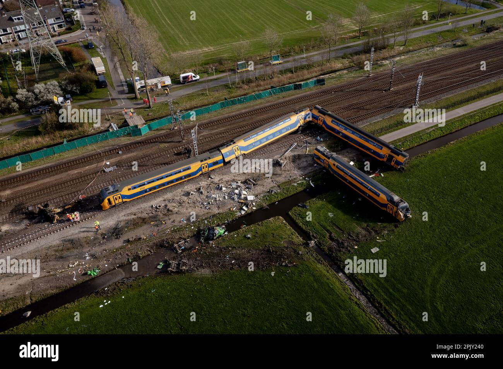
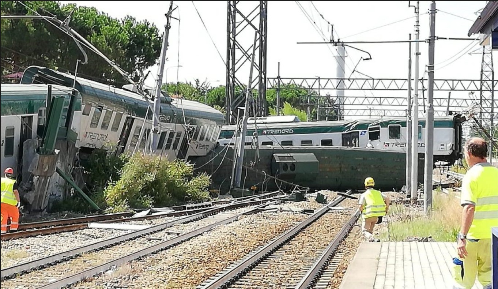
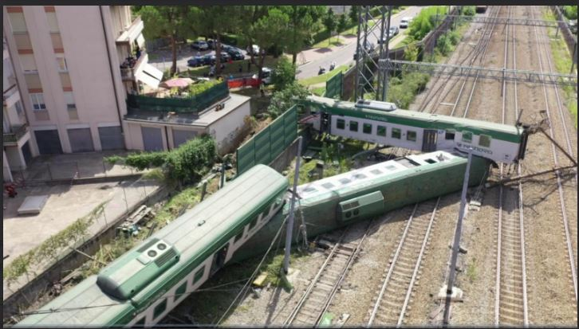
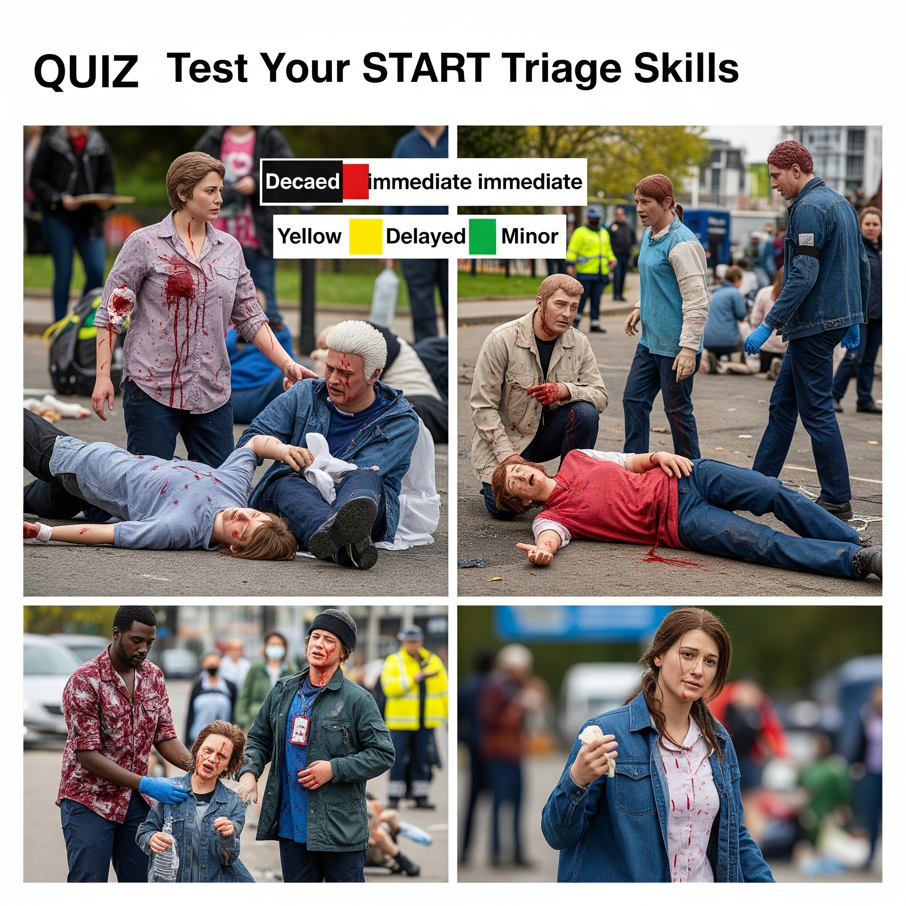

Anatomia di una Risposta Coordinata
Un'esplorazione interattiva delle fasi, dei ruoli e delle strategie che definiscono la gestione efficace di una maxi-emergenza.

Attivazione Chiamata: La SOREU Ti Chiama!
Clicca sul telefono per simulare l'attivazione della Centrale Operativa 118 (SOREU) e preparati al briefing iniziale. **Attenzione: è l'ora di punta!**
Orario attuale: 07:30
Traffico in aumento, risorse potenzialmente più impegnate.
Lo Scenario: Valuta l'Evento
Osserva l'immagine e rispondi per valutare lo scenario: è la base della prima comunicazione alla SOREU.

La Tua Valutazione
Le Fasi della Risposta
La risposta segue un ciclo di fasi, ognuna con obiettivi e azioni specifiche. Clicca su una fase per i dettagli.
Ogni evento ha una risposta rapida, con le risorse locali, e una risposta differita, nelle ore successive, con gli aiuti dall'esterno; entrambe passano per le fasi di preallarme, allarme ed emergenza (manuale AREU 2026, p. 9).
Fase Preparatoria: il Piano di Emergenza
L'emergenza si prepara in tempo di pace: si conosce il territorio (ospedali, case di cura, farmacie, servizi mortuari), si elencano gli eventi attesi, si crea uno scenario per ciascuno e si quantificano e catalogano le risorse.
Territorio ➔ Eventi attesi ➔ Scenari ➔ Risorse
Per non improvvisare: pianificare comportamenti e procedure.
Gioco: le aree della maxiemergenza
Trascina ogni descrizione sull'area giusta. Sono le aree del manuale AREU della maxiemergenza 2026: dal luogo dell'evento, con la sua area di sicurezza, fino al PMA e ai check point.
Definizioni (trascina sulle aree)
Trascina le definizioni sulle aree corrispondenti.
Gli Attori Chiave sul Campo
Ogni figura di riferimento ha la sua pettorina e responsabilità precise. Clicca su una figura per i dettagli.
Attori Chiave — Abbina il Ruolo al Colore
Trascina ogni ruolo sulla pettorina del colore corretto: il colore lo identifica sul campo.
Ruoli (Trascina)
Colori (Rilascia qui)
Trascina i ruoli sulle pettorine colorate.
Attori Chiave — Interagisci con gli Altri Enti
Riconosci i responsabili delle altre forze e con chi interagire in ogni situazione.
Mezzi e Strutture Operative
Gli strumenti della risposta sul campo: dai mezzi di soccorso al Posto Medico Avanzato (PMA).
Mezzi di Soccorso
I mezzi subito operativi sono quelli convenzionati con AREU (manuale della maxiemergenza 2026, p. 12).
- MSB, Mezzo di Soccorso di Base: ambulanza con 2 o 3 soccorritori.
- MSA1, Mezzo di Soccorso Avanzato di 1° livello, su auto o ambulanza.
- MSA2, Mezzo di Soccorso Avanzato di 2° livello, su auto o ambulanza.
- Elisoccorso, attivabile h24 se meteo e logistica lo permettono.
Dopo la dichiarazione di maxiemergenza può arrivare, in non meno di un'ora, il Mezzo di Coordinamento dell'AAT. All'arrivo del primo MSA il medico assume il ruolo di DSS, l'infermiere quello di Direttore del Triage e l'autista soccorritore quello di Direttore dei Trasporti.
Il Posto Medico Avanzato (PMA)
Il PMA sta ai margini esterni dell'area di sicurezza, con una buona viabilità di accesso e di evacuazione: può essere una struttura (tenda, modulo) o semplicemente un'area funzionale. Di norma vi accedono solo i codici giallo e rosso; i verdi vanno nella loro area, le salme in un'area a parte. Clicca su una parte del PMA per scoprirne la funzione.
Clicca su una parte del PMA per i dettagli.
Il Triage: Decidere in Pochi Secondi
Il metodo START classifica rapidamente le vittime. Clicca su ogni passo per seguire l'algoritmo. N.B.: il soccorritore non attribuisce mai il NERO, che spetta ai sanitari, e non inizia la rianimazione: con lesioni incompatibili con la vita attribuisce il ROSSO e avvisa il Direttore del Triage, se è già sul posto, altrimenti la SOREU al termine del triage (manuale AREU 2026, p. 22-23).
Passi del Triage S.T.A.R.T. (Semplificato)
Clicca sul passo evidenziato per rivelare il successivo.
Distribuzione dei codici
Al primo passo i deambulanti sono VERDI.
Il Primo MSB in Arrivo: Ruoli e Compiti
Sei il primo MSB sulla scena. Assegna ogni compito al ruolo corretto: trascinalo, oppure selezionalo e clicca sul ruolo.
Ruoli dell'Equipaggio MSB
Trascina i compiti sui ruoli corrispondenti.
Compiti da Assegnare
I Compiti del Referente per la SOREU: Ordina le Azioni
Metti in ordine i compiti del Referente per la SOREU, il capo equipaggio del primo MSB, come nella sua action card del Kit Maxi.
Compiti del Referente per la SOREU (Trascina per Riordinare)
Istruzioni
Trascina gli elementi nella lista a sinistra per metterli nell'ordine corretto di esecuzione da parte del Referente per la SOREU. Al termine, clicca su "Verifica Ordine".
Riorganizza i compiti.
Comunicazione SOREU: il M.E.T.H.A.N.E. Game
Trascina ogni lettera del M.E.T.H.A.N.E. sulla definizione corretta.
Lettere M.E.T.H.A.N.E. (trascina sulle definizioni)
Definizioni
Trascina le lettere sulle definizioni.
Progetta il Tuo Piano sul Campo
Dove vanno le vittime? Posiziona l'area di raccolta, il PMA e l'area dei codici verdi intorno al luogo del crash.
Aree da Posizionare
Clicca su un'area per selezionarla, poi clicca sulla griglia per posizionarla.
La Tua Mappa Operativa
Consigli per il posizionamento (manuale AREU 2026):
- 🚆 e 🔥 sono il luogo del crash con l'area di sicurezza intorno, da mantenere sgombra.
- L'area di raccolta dei codici giallo e rosso è un'area sicura vicino al crash.
- Il PMA sta ai margini esterni dell'area di sicurezza, il più vicino possibile all'area di raccolta.
- L'area dei codici verdi è un'area sicura a debita distanza dal luogo dell'evento, distinta dal PMA.
Crash: Simula il Flusso Mezzi
Il crash e il PMA sono già sulla mappa. Posiziona l'entrata e l'uscita del PMA, i due check point del cantiere e l'area di sosta dei mezzi.
Marcatori da Posizionare
Seleziona un marcatore dalla palette e poi clicca sulla mappa per posizionarlo. Per toglierlo, selezionalo di nuovo e clicca su quello già posizionato.
La Tua Mappa di Flusso Mezzi
Priorità d'Intervento: il Primo MSB sul Deragliamento
Sei il Referente per la SOREU del primo MSB: metti le azioni nell'ordine in cui le chiede il manuale AREU 2026.
Scenario: Incidente Ferroviario

Un treno è deragliato, con alcuni vagoni rovesciati. Si vedono fumo e detriti. Si sentono lamenti dalle lamiere accartocciate. La linea elettrica aerea del treno sembra danneggiata.
Ordina le Azioni per Priorità
Trascina le azioni per riordinarle.
Qui riceverai feedback sull'ordine delle tue azioni.
Gestione delle Risorse: Incidente Ferroviario
Chi lavora dove? Trascina squadre e figure di riferimento nell'area in cui operano, secondo il manuale AREU 2026.
Squadre e Figure
Mappa delle Aree (Drag & Drop)
Trascina le risorse sulle aree corrispondenti.
Comunicazione Radio: Il Messaggio Giusto
Per ogni situazione scegli che cosa comunicare e a chi, come chiede il manuale AREU 2026.
Situazione:
Caricamento scenario...
Scegli la risposta corretta.
Scelte difficili: la procedura ti protegge
In una maxiemergenza lo stress emotivo è forte: non improvvisare, rispettare i ruoli, collaborare (manuale AREU 2026, p. 12).
Dilemma:
Caricamento dilemma...
Qui apparirà l'esito della tua scelta.
Quiz: Metti alla Prova le Tue Conoscenze
Verifica la tua comprensione del triage START e dei concetti chiave delle maxi-emergenze.

Congratulazioni!
Hai completato tutti i giochi dell'esercitazione sulla maxiemergenza, costruita sul manuale AREU 2026 per i soccorritori. Ricorda: ricognizione a distanza, METHANE, rispetto dei ruoli.